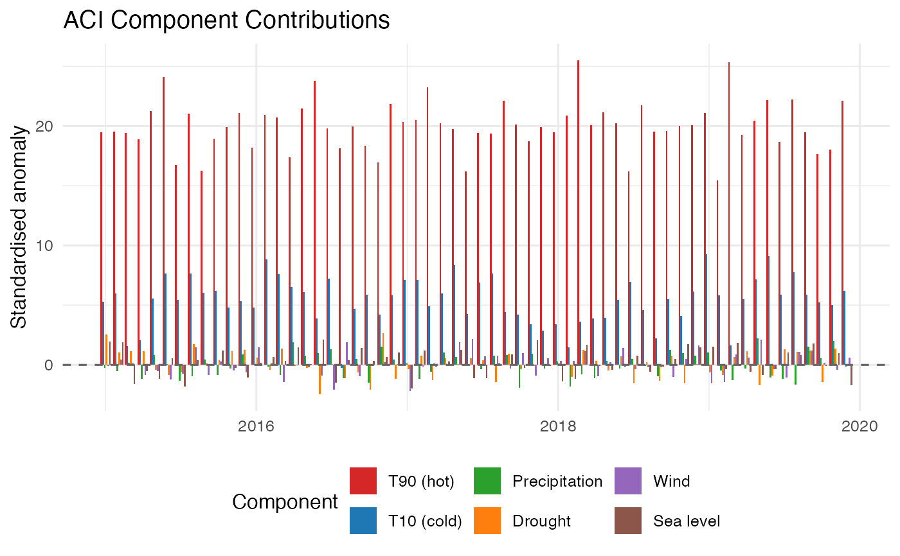
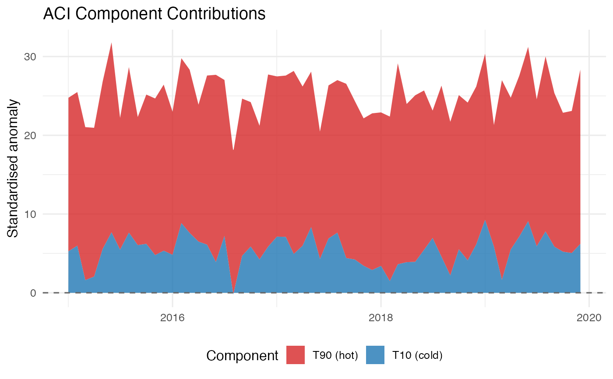

Produces either a bar chart (one panel per component,
type = "bar") or a stacked area chart
(type = "stacked") showing the six standardised components that
make up the ACI.
Usage
plot_aci_components(
aci_df,
type = c("stacked", "line", "bar"),
components = NULL,
title = "ACI Component Contributions",
subtitle = NULL
)Arguments
- aci_df
A
data.framereturned bycalculate_aci()witharea = TRUE- type
"stacked"(default),"line"or"bar".- components
Character vector of component names to include. Default: all six
c("t90","t10","precipitation","drought","wind","sealevel").- title
Plot title.
- subtitle
Character or
NULL. Optional subtitle displayed below the title. DefaultNULL.
Examples
# Toy monthly ACI data.frame (see plot_aci_timeseries() for details)
n <- 60L
dates <- format(seq(as.Date("2015-01-01"), by = "month", length.out = n),
"%Y-%m")
aci_df <- data.frame(
t90 = 20 + stats::rnorm(n, sd = 2),
t10 = 5 + stats::rnorm(n, sd = 2),
precipitation = stats::rnorm(n, sd = 1),
drought = stats::rnorm(n, sd = 1),
wind = stats::rnorm(n, sd = 1),
sealevel = stats::rnorm(n, sd = 1),
row.names = dates
)
aci_df$ACI <- with(aci_df, (t90 - t10 + precipitation + drought +
wind + sealevel) / 5)
plot_aci_components(aci_df, type = "bar")

plot_aci_components(aci_df, type = "stacked", components = c("t90", "t10"))
